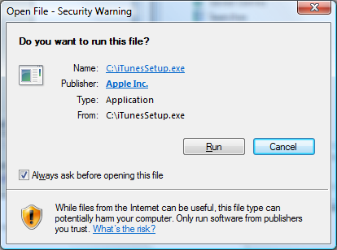
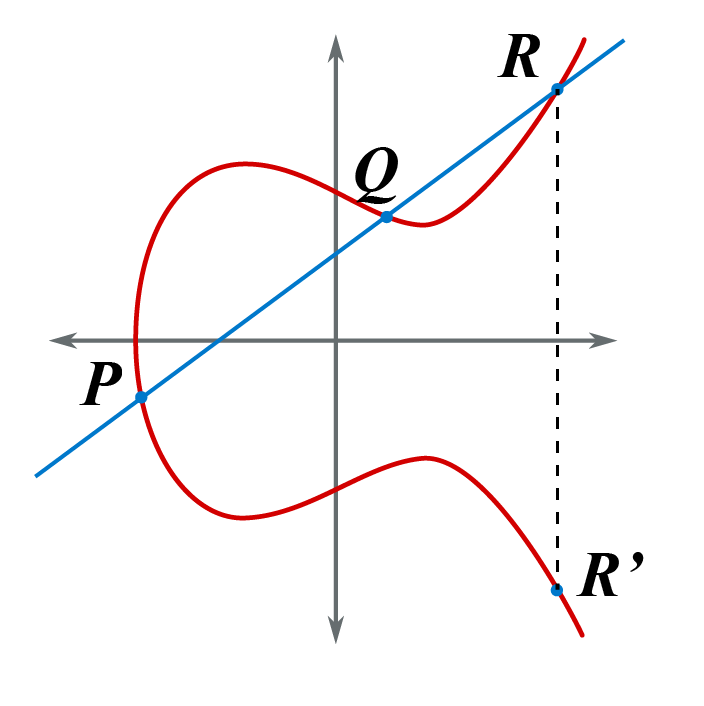

Bezbednost
Veljko Petrović
Novembar, 2022
Bezbednost računarsva u oblaku
Obezbeđivanje sistema
Šta je bezbednost?
- Bezbednost, u najširem smislu, jeste da budemo slobodni opasnosti ili rizika štete
- Važi za sve: računare, materijalna dobra uopšte, ljudske živote…
- Praksa bezbednosti je postizanje tog stanja
- Za računarske sisteme ovo se deli na:
- Fizičku bezbednost
- Sistemsku bezbednost
Sistemska bezbednost
- Sistemska bezbednost se odnosi na sisteme koje upravljaju informacijama i odnosi se na pravila i procedure koja omogućavaju tom sistemu da pruža nekakve bezbednosne garancije
- Ne mora biti isključivo računarski sistem
- Primeri ne-računarske bezbednosti:
- Knjigovodstvo sa dvostrukim unosom
- Indeks
Fizička bezbednost
- Fizička bezbednost se odnosi na fizičku nepovredivost materijalnih pomagala koja služe da obezbede pravila i procedure sistemske bezbednosti
- U slučaju računarskih sistema to je bezbednost fizičkih uređaja računara i njihove infrastrukture
- Manifestuje se u obezbeđenim, zaključanim serverskim sobama, obezbeđenim mrežnim vezama, odbranom od požara
- Postiže se osobljem i tehničkim pomagalima specijalizovanim za baš to
Menadžment rizikom
- Jedan od glavnih poslova u praksi bezbednosti je menadžment rizikom
- Menadžment rizikom se sastoji od tri glavna koraka
- Identifikacija
- Ublažavanje
- Dokumentacija
- Identifikacija je uočavanje rizika “Neko bi mogao da uđe kroz ovaj prozor.”
- Ublažavanje je preduzimanje koraka da se neki rizik ublaži ili eliminiše “Trebalo bi da stavimo rešetke na prozor da bi sprečili bilo koga da uđe.”
- Dokumentacija je, u slučaju zakazivanja bezbednosti, beleženje načinjene štete i atribucija te štete na identifikovan faktor rizika “Napadač je ušao kroz neobezbeđen prozor u prizemlju.”
Komponente sistema
- Kada je u pitanju sistemska bezbednost, imamo dva tipa komponenti da posmatramo:
- Funkcionalnosti
- Bezbednosne politike
- Možemo o njima misliti kao o ‘dobro’ i ‘loše’ našeg sistema
- Funkcionalnost je ono što želimo: operacije zbog kojih uopšte i imamo sistem
- Bezbednosne politke su zabranjena stanja i prelazi između stanja: ono što hoćemo da sprečimo ili, barem, pažljivo zabeležimo.
Forma bezbednosne politike
- Bezbednosnu politiku formiramo tipično iz tri dela:
- Akter (A)
- Zabranjeno stanje (Z)
- Resurs (R)
Primeri bezbednosne politke
- Ocena studenta (R) ne sme se prihvatiti bez potpisa nastavnika (A).
- Glasač (A) ne sme glasati (R) više od jednom (Z).
- Bilo koji korisnik koji nije
root(A) ne sme modifikovati (Z) ovaj fajl (R).
Šta bezbednosna politika treba da postigne?
- Na engleskom ciljevi se često označavaju kroz CIA sistem:
- Poverljivost odn. Confidentiality - Da podaci ostanu poznati samo onim licima kojima treba da budu poznati.
- Integritet odn. Integrity - Da se podaci ne mogu menjati osim od strane onih koji za to imaju prava
- Dostupnost odn. Availability - Da je sistem dostupan da obavlja svoj posao bez obzira na akcije lica neautorizovanih da raspolažu njegovim resursima.
PID Sistem
- P-rizik je da neko probije zaštitu i čita poslovne tajne firme.
- I-rizik je da neko probije zaštitu i promeni poslovne knjige firme tako da, recimo, ne duguje ništa za neku transakciju.
- D-rizik je da neko preoptereti servere i izazove prekid u pružanju legitimnih usluga.
PID i CC
- PID se generalno odnosi na CC na isti način kao i na bilo koju drugu situaciju
- Imaju dve glavne razlike
- Prva glavna razlika jeste da je da postoji još jedna linija napada: ako napadač uspe da zaobiđe individualne virtuelizovane instance i umesto toga napadne hipervizor direktno to otvara mnogo veći i gadniji P i I rizik.
- Druga je da D rizik interaguje kompleksno sa okruženjem: sa jedne strane određeni D rizci se mogu lako nadjačati, zato što je uvek moguće angažovati više (ogromnih) kapaciteta CC provajdera, sa druge interakcija D rizika i elastičnog računarsva znači da uspešan D-napad može da košta jako puno novca.
Kako politike stupaju na snagu
- Bezbednosne politike su pravila
- Možemo ih istaći na oglasnu tablu, ali nam samo mogu upravljati rizikom ako imamo mehanizam kojim se to pravilo sprovodi.
- Ovo se zovu bezbednosni mehanizmi ili bezbednosne kontrole
- Primeri:
- Slojevi za pružanje bezbednosti u operativnim sistemima i hipervizorima
- Šifre za pristup
- Kriptografske tehnike uključujući: potpise, šifrovanja, i dokaze nultiog znanja
- Fizički bezbednosni mehanizmi kao što su mehanički ključevi, pametne kartice, i prenosivi kriptografski moduli
Tehnike sprovođenja bezbednosti
- Prevencija
- Detekcija
- Oporavak
- Obeshrabrivanje
Prevencija
- Najbolje je koristiti prevenciju, ako je to moguće
- To znači da se bezbednosni mehanizmi primene tako da potpuno spreče da nastane bezbednosni pristup
- Ako smo šifrovali osetljiv fajl, i dali ključeve za dekripciju samo onima koji treba da imaju pristup, onda smo izkontrolisali P-rizik uspešno pod uslovom da ključevi ne procure i da je tehnika šifrovanja bez poznatih mana i tehnika zaobilaženja.
- Najuspešniji bezbednosni sistemi su nevidljivi zato što operišu na nivou prevencije.
Detekcija
- Ako ne možemo da sprečimo, sledeća najbolja stvar je da primetimo
- To znači da svaki sistem koji nudi bezbednost mora da beleži svoje ponašanje, naročito ono koje se odnosi na bezbednosnu politiku sistema
- Ako je neko pristupio fajlu iz prethodnog primera, barem možemo da saznamo kada i ko i kako tako da se napad može sprečiti u budućnosti i tako da se napadač može lako uhvatiti.
Oporavak
- Kada se jednom desi proboj bezbednosti, oporavak znači da se identifikuje tačan način napada, da se taj vektor (i srodni) otklone za ubuduće, i da se šteta načinjena otkloni i omogući se da se sistem vrati u normalnu bezbednu operaciju.
- Vreme za planiranje ovih u-slučaju-propasti-razbiti-staklo praksi je pre bilo kakvog problema.
- U slučaju čitanja fajla koji je bio enkriptovan, mogu se promeniti tehnike šifrovanja ili rotirati ključevi
Obeshrabrivanje
- Vrlo bitan faktor u slučaju bezbednosnog propusta jeste da se napadač identifikuje i, ako je to moguće, nekako goni: pravno, disciplinski, šta god da je već prikladno situaciji
- Ovo služi da obeshrabri, barem donekle, buduće napadače.
Protivnici
- Ko je to ko hoće da prekrši naše bezbednosne politike?
- Univerzalni termin za takve je ‘napadači’ ili ‘protivnici’
- Engleski termin je adversaries
- Bitan deo prakse bezbednosti je proučavanje protivnika
- Bez njih, polje bezbednosti ne bi postojalo: u svetu u kome su svi pošteni ne bi bilo razloga da šifre postoje, a kamoli drugi, kompleksniji mehanizimi bezbednosti
- Primer: ITS
Motivacije protivnika
- Ekonomska
- Ovo je najprostija forma motivacije: probijanje bezbednosti donosi nekakvu finansijsku dobit
- Ovaj tip motivacije je dobar za procenu nivoa rizika: što je veća vrednost koju sistem štiti, to je rizik od ove vrste napadača veći
- Zahvaljujući PoW klasi blockchain sistema, ‘vrednost’ se može ovde odnositi i na računarsku moć
- Malicioznost
- Ovde je motiv zloba ili osveta
- Arhetipski, ovo je, npr. bivši zaposleni
- Vrlo je teško predvideti zato što je, po svojoj prirodi, irracionalna
Motivacije protivnika
- Politička
- Ovo je motivacija kroz ideologiju ili politički konflikt
- Napad je ili simbolički ili predstavlja čin rata kroz računarsku bezbednost
- Napadi drugog tipa su često kroz NPP (o tome kasnije)
- Tehnička
- Ovde motivacija nije ono što razbijanje zaštite omogućava nego samo razbijanje zaštite: tehnički izazov
- Ovo se može barem delimično rešiti kroz bug bounty program koji incentivizira ovakvog napadača da se ponaša odgovorno
Motivacije protivnika
- Nihilistička
- Ovo nema bolji termin: postoji (redak) tip napadača koji jednostavno želi da naudi što većem broju ljudi i veruje da je zloupotreba računarskih sistema relativno dobar način da se to učini.
- Velika većina pošasti virusa 1990-tih nije donela nikome nikakvu korist.
- Većina nije čak ni imala neku poruku, jednostavno su uništavali zato što je to zabavljalo kreatore
- Ovo je teško predvideti i teško se odbraniti zato što je napad, naizlged, potpuno demotivisan.
Demotivisanje napadača
- Najbolja moguća odbrana jeste da se napadač demotiviše da uopšte napadne sistem
- Ako je u pitanju malicioznost ili politika ili tako nešto, demotivacija je nešto teža.
- Ekonomsku motivaciju je lako demotivisati: samo treba učiniti sistem skupim za napad.
- Napadač želi da profitira: ako postoje drugi sistemi negde drugde koji su lakša meta, a ovaj zahteva investiciju vremena i veštine i računarske infrastrukture koja je dovoljno velika da ‘pojede’ profit, onda će napadač preći na nekog drugog.
Klasifikacija napadača u odnosu na metu
- Eksterni
- Napadač je eksteran u odnosu na sistem. To je dobro, zato što je šansa da ne zna internu strukturu sistema, i loše zato što napadač može biti bilo ko, bilo gde.
- Interni
- Napadač je neko ko ima/je imao legitiman pristup sistemu. Ovo omogućava zloupotrebu kredencijala (napad ‘iznutra’) kao i poznavanje detalja sistema koji su normalno tajni.
Klasifikacija napadača u odnosu na metu
- Uprava
- Napad iz uprave nastaje kada neko ko je operater sistema i u upravnim strukturama hoće da uradi nešto na način koji je tajan ili poreciv: ovde nije stvar da napadač pokušava da dobije pristup, napdač ima pristup, stvar je da napadač želi da iskoristi taj pristup, a da niko ne sazna
- Tipičan slučaj je lažiranje poslovnih podataka
- Snadbevač
- Osoba koja pruža softversko/hardversko rešenje koje koristi neki sistem želi da taj sistem napadne, i pretvori svoj proizvod u ‘trojanski konj’
- Ovo je zastrašujuća forma napada zato što je odbrana u nekim slučajevima sasvim nemoguća
Klasifikacija napadača u odnosu na resurse i mogućnosti
- Pitanja koja valja postaviti vezana za napadača su:
- Da li poseduje poznavanje interne operacije sistema?
- Da li poseduje izvorni kod?
- Da li poseduje pristup lozinkama, šiframa, ili kodovima koji pružaju pristup sistemu?
- Da li poseduje pristup osetljivim ličnim podacima operatora sistema?
- Koji je stepen tehničke sofisticiranosti napadača?
Klasifikacija napadača u odnosu na resurse i mogućnosti
- Da li je napadač sposoban za fizičku infiltraciju?
- Da li napdač ima kapacitete za računarstvo visokih performansi?
- Da li napadač ima sposobnost da presreće i modifikuje komunikaciju između sistema i ostatka sveta?
- Da li napadač ima sposobnost da ostvari subverziju eksternih aktera sistema?
- Da li napadač ima efektivno neograničeno vreme i strpljenje?
Napredna Perzistentna Pretnja
- Ovo je kalk engleskog Advanced Persistent Threat
- Ovo je najgora klasifikacija napadača
- Ovde nije slučaj nekoga ko pravi ako prođe, prođe oportunistički napad na sistem (što je najčešća forma) ili proba šta zna i odustane ako (npr) niko ne klikne na phishing poruku.
- Ovde je slučaj nekoga ko odabere metu i potroši onoliko vremena i resursa koliko je neophodno da se pridobije pristup
Napredna Perzistentna Pretnja
- Ovo je retko osoba, češće je u pitanju grupa, još češće organizacija
- Najpoznatiji NPPovi su državne organizacije posvećene diverzantnskim napdima u računarskom prostoru
- Resursi takvih napadača su neretko, efektno, beskonačni, i zahtevaju apsolutno ogroman napor da bi se od njih odbranilo
Neki Bezbednosni Principi
Principi prakse i teorije bezbednosti
Princip cena
- Svaka bezbednosna mera će imati nekakvu cenu. Ta cena može biti direktno novčana, ili reflektovana u sporosti rada sistema, kompleksnosti rada sa njim, ograničene funkcionalnosti ili povećanih hardverskih zahteva.
- Nemoguće je nazvati nešto bezbednim ili ne bez ustanovljenja skale pretnje i odbrane
- Brava koja je adekvatna za bicikl je neprihvatljiva za sef, a preterana za fioku u kojoj držite escajg
- Cena bezbednosti se mora skalirati sa verovatnoćom da će doći do pretnje i sa razmerom te pretnje kada se pojavi
Princip metodološke skromnosti
- Svaki sistem koji dizajnirate ili koristite može i hoće doživeti propust. Planirajte shodno tome.
- Ništa nije, niti može biti, istinski bezbedno
- Umesto, postoje samo stepeni ranjivosti
- Ovo nije poziv na pesimizam: umesto, sistem ne treba dizajnirati tako da se oslanja sasvim da jedan mehanizam radi savršeno, ili da nešto neće imati nikakve greške: umesto sistem valja dizajnirati sa predpostavkom da bilo šta može da otkaže i sa nekakvim načinom da se od toga oporavi
- Da li CC ovome odgovara?
Pricip lakoće upotrebe
- Bezbednosni sistem mora biti toliko lak za upotrebu da garantuje saradnju od strane krajnjeg korisnika.
- Ako se ne prati ovaj savet desi se fijasko Vista UAC sistema
- Naravno, bezbednost uvek košta lakoću upotrebe, ali ovo je trošak koji se mora rigorozno kontrolisati
- Bezbednost zavisi od korisnika.
Princip minimalne privilegije
- Nikada ne dati nekom korisniku, procesu, sistemu, ili bilo kom nosiocu prava u sistemu više privilegija nego što je apsolutno neophodno za njihov posao.
- Zašto vaš internet pretraživač može da čita vaše dokumente?
- Ova minimizacija privilegije ne čini samo da se pristup sistemu teže zloupotrebi, nego još i smanjuje kompleksnost sistema tako da je napadačka povrišina manja.
Princip podele privilegije
- Osetljive akcije u sistemu treba da uvek zahtevaju saradnju više nezavisnih aktera.
- Sigruno ste na ekranu videli najdramatičniji primer ovoga gde se istovremenu okreću udaljeni ključevi ne bi li se obavilo nešto, uglavnom, apokaliptično.
- U malo manje dramatičnim sistemima, mogli bi imati situaciju gde je potreban administratorski korisnik da bi se inicirala promena bezbednosne politike, a onda drugi administratorski korisnik da bi se promena potvrdila.
- U sistemu sa kojim svi imate dosta iskustva, za osetljivu akciju ‘uspešna odbrana diplomskog rada’ potrebni su potpisi tri ‘administratora’ odn. nastavnika.
Princip odbrane u dubinu
- Ništa nije bezbedno iza samo jednog mehanizma odbrane, bez obzira koliko je taj sistem dobar.
- Kada su u pitanju sistemi bezbednosti važi stari inženjerski princip one is none.
- Ako je to ikako moguće, svi osetljivi resursi treba da su iza više sistema odbrane koji imaju različit princip funkcionisanja.
- Ovo izbegava jedinstvene ‘tačke pucanja’
- Neophodnost interagovanja sa mnogo bezbednosnih sistema takođe povećava šansu da će prilikom napada biti zabeležen ključan podatak o napadaču
Princip kompletne medijacije
- Svaki zahtev prema sistemu mora biti autentifikovan bez obzira na važnost ili posledicu.
- Bez obzira što je korisnik uspešno obavio 30 zahteva, i zahtev 31 mora biti podvrgnut punoj proveri.
- Takođe, nije bitno ako je zahtev prema nečemu sasvim benginom (tj. O nama sekcija): i dalje je provera ključna
- Zašto? Bilo šta što je dostupno je površina za napad.
- Naravno, neki servisi moraju biti otvoreni neautentifikovanim zahtevima, ali ako se mogu zatvoriti treba da budu zatvoreni
Princip mekog sletanja
- Sve podrazumevane vrednosti za sve opcije u sistemu moraju biti nameštene pod pretpostavkom da će greškom nešto biti postavljeno na podrazumevanu vrednost (umesto na onu koja je željena), te moraju biti podrazumevano bezbedne.
- Čest oblik greške je gde neko napravi grešku u konfiguraciji i umesto da sistem ima neku odbranu, on u stvari dopušta sve akcije (pošto je to podrazumevano ponašanje)
- Ova podrazumevana ponašanja su napravljena tako ne iz nekompetentnosti nego zato što je mnogo lakše namestiti sistem ako se ne rvete sa bezbednošću
- Nažalost, bezbednost nije nešto što se ‘doda kasnije’ no mora ići prvo
- Stoga sve podrazumevane vrednosti i sve predpostavke sistema ako nešto nije u redu sa konfiguracijom moraju da greše u smeru veće bezbednosti, makar to dovelo do otkaza sistema: bolje bag koji otkrijete prilikom nameštanja sistema nego onaj o kome čitate na naslovnoj strani Ars Technica
Princip otvorenosti
- Nijedna bezbednosna mera ne treba da se oslanja na tajnost mere da bi bila efektna.
- Prvo, implementacioni detalji kompleksnih sistema su vrlo teški za sakrivanje, i vrlo laki da procure.
- Drugo, objavljivanje detalja bezbednosti može da bude vrlo dobro za bezbednost zato što se greške brzo nalaze ako je sistem pdodvrgnut javnom uvidu.
- Given enough eyes, all bugs are shallow
Kratka istorija računarske (ne)bezbednosti
Rana istorija bezbednosti i lekcije koje nas uči
Prvi računarski zločini
- Prvi računarski zločini su bili prilično dosadni, i sastojali su se od napada na računare
- 1973 u Melburnu su demonstranti (protiv rata) pucali u računar sačmarom
- 1978 je stradao IBM 3031 zato što je bio deo NAVSTAR programa koji je bio neka vrsta preteče GPS i to se nekom demonstrantu nije svidelo.
- Nisu svi napadi bili politički, 1974. računar u Šarlotu, Severna Karolina, SAD je frustrirani operater upucao
- Hajde da budemo iskreni, svi smo to hteli jednom da uradimo…
Lekcije?
- Bez obzira koliko su vam dobre sistemkse zaštite, fizička bezbednost je jednako bitna. Nema tog operativnog sistema koji vas štiti od toga da neko uđe u serversku sobu sa automatskom puškom.
- Naročito, D-tip napada je, sa fizičkim pristupom mašini, moguće ostvariti sa apsolutno nultim stepenom tehničke sofisticiranosti
Početak socijalnih napada
- Godine 1970. Džeri Nil Šnajder je počeo da analizira smeće Pacifičke Telefonsko-Telegrafske Kompanije i posle godinu dana rada je imao dovoljno insajderskih podataka i informacija da uverljivo lažira da je zaposleni.
- Godine 1971. je naručio 30 000 dolara opreme (oko 200 000 u današnjim dolarima) u ime kompanije, preuzeo je, i onda prodao.
- Pre nego što je uhvaćen, uspeo je da industrijalizuje ovaj posao sa sopstvenim zaposlenima i skladištem i uspeo je da ukrade oko milion ondašnjih dolara (6.4 miliona danas)
Lekcije?
- Ljudi su jako, jako dobri u laganju i interni znakovi za raspoznavanje su nepouzdani i lako cure: nikada ne treba imati sistem u kome bilo koji kranji korisnik mora da može da razlikuje da li je neko pošten ili ne: uvek treba da postoji provera kredencijala i ona mora da bude obavezna.
- Papiri ne smeju da izađu iz bezbedne instalacije a da pre toga nisu iseckani
- Moderni dodatak: socijalni mediji su još jedan ozbiljan vektor kroz koji cure informacije.
Telefonske prevare
- Momenta kada su telefonske mreže prešle sa ljudskih operatera na automatski sistem, postalo je moguće da se telefonski sistem prevari.
- Sve je počelo sa Jozefom Engressiom, slepim sedmogodišnjakom koji je 1957, kao apsolutni sluhista, naučio da oponaša \(2600Hz\) signal koji je američki telefonski sistem koristio kao kontrolni i stekao sposobnost da nazove bilo koji telefonski broj koji želi besplatno.
- Ovaj podvik je ponovio Džon Drejper 1964 kada je primetio da istu sposobnost imaju besplatne zviždaljke koje su se delile uz Cap’n Crunch Rekreirao je to u formi elektronskog uređaja koji je postao poznat kao ‘plava kutija.’
Telefonske prevare
- Motivacija za ove zločine je delimično bila ekonomska (telefonski pozivi su bili skupi) ali uglavnom je bilo zadovoljstvo ovladavanja kompleksnim sistemom: u svetu pre interneta ništa nije bilo komplikovanije od međunarnodne telekomunikacione mreže
- Ovo se sudarilo sa računarskim sistemima kada je Kevin Polsen pobegao od zakona (jurili su ga zbog provale u navodno bezbedne sisteme na ranom ARPAnet-u za koje se ispostavilo da imaju lako dostupne telefonske pristupe) i uspeo da dugo bude korak ispred svojih progonitelja zato što je provalio u sisteme koje je FBI krostio za elektronski nadzor (a novac je dobijao tako što je industrijalizovano varao u raznim takmičenjima koje su organizovale radio stanice)
Lekcije?
- Postoje ljudi koji će razbiti vaš bezbednosni sistem samo zato što mogu.
- Svaki komunikacioni sistem na koji povežete vaš sistem povećava napadačku površinu za red veličine.
- Ako vaš sistem može da obavlja svoj posao a da nije povezan na bilo šta javno apsolutno ne treba da bude povezan na bilo šta javno.
Equity Funding Prevara
- Ovo je vrlo zanimljiv slučaj koji se odnosi na firmu poznatu kao Equity Funding Corporation of America dalje EFC
- Tu se desilo da ključan izveštaj nije mogao biti proizveden na vreme zbog računarske greške
- Direktor kompanije je ‘izlečio’ problem tako što je odlučio da je bilo oko deset miliona dolara profita i namestio sve ostale brojke da tako i ispadne
- Ideja je bila da je ovo bezazlena laž jer je firma u tom trenutku zaista bila profitabilna
Ne tako bezazleno
- Kada su videli koliko je to lako, direktori kompanije su počeli da falsifikuju sve više i više podataka
- U početku to su bile samo lažne polise osiguranja (koje su naduvavale prijavljen profit), ali su se vrlo brzo, omamljeni pohlepom, direktori setili prevare kroz reosiguranje.
Reosiguranje
- Osiguravajuća polisa je rizik koji generiše profit
- Neko plaća fiksno, mesečno, ali vi kao osiguravajuća kuća rizikujete da morate da odjednom platite mnogo
- Statistički je situacija modelovana da gledano u globalu, isplata usled rizika je manja od plaćenih premija, tj. osiguravajući posao donosi profit.
- Ali statistika priča o tome šta se očekuje u slučaju da imate beskonačno polisa, šta ako vam se desi loša sreća da morate da isplatite deset velikih zaredom, recimo?
Reosiguranje
- Reosiguranje je trik gde se polisa koja donosi \(X\) u premijama i ima rizik da se traži isplata do \(Y\) podeli u \(n\) jedinica gde svaka donosi \(\frac{X}{n}\) u premijama, i rizikuje isplatu od \(\frac{Y}{n}\)
- Ovim tranšama se onda trguje na otvorenom tržištu
- Ovo postaje naročito zanimljivo ako zamislimo (idealizovan) slučaj gde imate populaciju od \(m\) osiguranika \((m > n)\) i konstruišete Frankenštajn-polisu koja se sastoji od \(n\) tranši različitih osiguranika. Pod pretpostavkom da svi imaju istu \((X,Y)\) polisu dobili bi nešto što ima isti profit kao jedinstvena polisa, ali dramatično manji rizik.
Prevara reosiguranjem
- Ako se izmisle lažne osiguravajuće polise one se mogu prodati u delićima za prave dolare
- Problem je u tome šta kada stignemo do onog ‘profitabilnog’ dela: šta bude kada treba da krenu da ‘kaplju’ premije?
- EFC je to rešio tako što je svoje lažne osiguranike lažno ubijao tik pred prvu premiju
- Ovo je radilo jako jako jako dugo: zapanjujuće dugo, uprkos tome što je barem jednom EFC uspeo da ubije osiguranika muškarca rakom materice.
Kraj prevare
- Niko nije uspeo da uhvati ovu prevaru čak ni kada je kompanija počela vrtoglav rast (jedan od zaverenika je izračunao da stopom kojom su krenuli, do 1980 EFC bi se pretvarala da osigurava svaku osobu na planeti Zemlji)
- Umesto toga iznerviran programer koji je morao da radi prekovremeno automatizovajući razvoj lažnih izveštaja je otišao u finansijsku policiju i prijavio svoje šefove.
Lekcije?
- Ponekad napadač je direktor
- Zahtevi da se naruši integritet podataka kada baze podataka i poslovne knjige uporno pokazuju nezgodne skupove činjenica su neobično česti i dobra je ideja da se učini jako teškim da se takvim zahtevima udovolji.
- Sam spoljašnji svet je demonstrirao nepoštovanje principa metodološke skromnosti i kompletne medijacije
- EFC je delovala dobro: imali su skupe kancelarije, i advokate, i jako puno ljudi u odelima. Podvrgavanje njihovih tvrdnji proveri i analizi bi bilo, pa, neuljudno i usporavalo bi biznis
- Trik je da se naprave sistemima u kojima je ‘nepoverenje’ algoritamsko, a dokazivanje tvrdnji automatizovano
- Da li vam nekakav takav sistem pada na pamet?
Ranjivosti
Ranjivosti, površine napada, i anatomija jedne slabosti
Svrha
- Šta je svrha ovoga?
- Ako morate da se brinete o bezbednosti nekakvog cloud sistema, morate da se brinete oko dve stvari, fundamentalno:
- Bezbednosti vaše implementacije i konfiguracije
- Bezbednosti softversko/hardverske infrastrukture
- Prvo je nešto što je sasvim vaš problem
- Drugo ne zavisi samo od vas: pre ili kasnije nešto na šta se oslanjate će imati nekakvu slabost
- Vaš posao je da o tome vodite računa
Primer
CVE-2020-0601
Šta to znači?
- Ovo je nekakav konfuzan alfanumerički string
- Šta je CVE? Common vulnerabilities and exposures
- To je ime za deljen sistem gde se softver i hardver koji drugi koriste može da prijavi da ima problem
- Služi da bi imali lak, i mašinski i ljudski čitljiv metod da se bezbednosne slabosti softvera identifikuju.
- Ovo je deo deljene infrastrukture bezbednosti u kojoj su proizvođači, administratori, i stručnjaci u zaveri protiv napadača.
Standardno ime
- Standardno ime ranjivosti se sastoji, dakle od:
- Prefiksa CVE
- Godine otkrića (ovde, dakle, 2020)
- Nasumične četiri cifre garantovano jedinstvene unutar te godine.
- Striktno govoreći, može da bude i više cifara, ali je trenutni standard 4
- Imamo i pod-standarde koji su odgovorni za ozbiljnost ranjivosti (CVSS) polja ranjivosti (CWE) i ranjive konfiguracije (CPE)
Kako da znamo šta je tačno CVE-2020-0601?
- Postoji zvanična lista koju održava MITRE korporacija
- Postoje mnoge metode da se ona pretraži, jedna standardna je da koristite mehanizam za pretragu koji omogućava američki NIST
- nvd.nist.gov
- Šta bude ako pretražimo taj sajt sa stringom CVE-2020-0601?
Rezultat pretrage
A kako znamo da uopšte pretražimo?
- Možemo tek da se efektno koristimo ovom bazom podataka ako imamo ideju da treba da pretražujemo i koji string pretražujemo.
- Kako znamo da ima nešto da se traži?
- Delimično možemo da pratimo vesti: postoje specijalistički sajtovi koji se bave vestima o ovome.
- Ali za svaki slučaj tu je… Twitter?
@CVENewnalog, verovali ili ne, ima pregled svake nove slabosti kako pristižu.
@CVENew
Šta možemo da saznamo o CVE-2020-0601
- Baza nudi standardna polja:
- Opis Tekstualni opis slabosti
- Ozbiljnost Kodirana numerička oznaka stepena ozbilnosti ranjivosti.
- Reference Linkovi, tipično prema post-u koji je ovo opisao, plus stranici proizvođača.
- Specifikacija slabosti Kodiran CWE zapis koji definiše na kom podsistemu je uočena slabost.
- Specifikacija konfiguracije Kodiran CPE zapis koji definiše koji sistemi su osetljivi.
Opis
Ozbiljnost
Vektor ozbiljnosti
- Uokvireno na slici je vektor ozbiljnosti
- Postoji naravno jedinstvena numerička vrednost koja služi da se na brzinu oceni koliko je užasna slabost
- Ovo je, nužno, veliko pojednostavljenje koje ponekad nije prigodno.
- Kada nam trebaju detalji, tu je šematski prikaz preko vektora ozbiljnosti.
Vektor ozbiljnosti
- AV—Attack vector ‘Odakle’ dolazi napad
- AC—Attack complexity Kompleksnost napada.
- PR—Privileges. Koje privilegije mora imati napadač?
- UI—User interaction Da li korisnik treba da nešto (pogrešno) uradi da bi napad uspeo.
Vektor ozbiljnosti
- S—Attack scope. Da li se napad može korisiti da se kroz njega lansiraju i drugi napadi na zaštićene sisteme.
- C—Confidentiality. Uticaj na ‘poverljivost’ komponentu PID sistema.
- I—Integrity Uticaj na ‘integritet’ komponentu PID sistema.
- A—Availability Uticaj na ‘dostupnost’ komponentu PID sistema.
Vektor ozbiljnosti CVE-2020-0601

Reference
Specifikacija slabosti

Šta je tačno specifikacija slabosti?
- Kada je stvar ispravke akutne slabosti zanima nas samo i isključivo jedan
CVEonda nas toliko i ne zanima gde je nastala greška, samo nas zanima da otklonimo problem. - Kada je cilj da softver bude, uopšteno govoreći, bezbedniji, onda je situacija drugačija i želimo da vidimo gde je tačno nastala ta slabost.
- Onda možemo da znamo, kada razvijamo sofver, gde treba biti oprezan i kako razvijati zaštite na nivou alata za razvoj i operativnih sistema koji pomažu.
- Napadači (i oni koji se pretvaraju u napadače istraživanja radi) tretiraju ovu listu kao odakle početi u napadu.
Šta analiza pokazuje da su najčešće greške?
Specifikacija konfiguracije
CPE standard
- Ova specifikacija konfiguracije ima ekstremno praktičnu svrhu
- Čim saznate za slabost prvo, prirodno pitanje jeste, ‘da li treba da se brinem?’
- Ponekad ovo je lako zato što je slabost jako lokalizovana u jednu specifičnu verziju jednog specifičnog softvera
- Ponekad je čak i za jedan računar teško otkriti zato što, možda, slabost samo nastaje u interakciji više vrlo specifičnih verzija.
CPE standard
- Stvar postaje još nezgodnija kada radite sa projektima koji ne poštuju
SemVerstandard i imaju kriptične oznake verzija plusbuildbrojeva plus… - A u cloud okruženju, situacija postaje znatno, znatno gora zato što radite ne sa par računara nego mnogo virtuelnih koji imaju raznolike konfiguracije
- Zbog toga, umesto da pogađate, možete da preuzmete
CPEformu vaših mašina i da je, mašinski, uporedite saCPEformom ranjivosti i znate odgovor odmah
Kako radi CPE
- Značenje je Common platform enumeration
- Verzija 2.3 (koja je najsvežija i potiče iz 2011) svaki komad softvera se može specificirati kao WFN odnosno Well-Formed CPE Name
- Ovo je apstraktan konstrukt koji se sastoji od ključeva i vrednosti
- Recimo:
wfn:[part="a",vendor="microsoft",product="internet_explorer",version="8\.0\.6001",update="beta"] - Ovo je (vrlo) specifična verzija drevnog Internet Explorer-a
Enkodiranje CPE WFN
- Kao što smo rekli, u verziji 2.3
WFNje apstraktan: samo kombinacija ključeva i vrednosti. - Može se enkodirati na više načina
- Verzija koja nas zanima je nešto što standard zove
formatted string binding - Primer:
cpe:2.3:a:microsoft:internet_explorer:8.0.6001:beta:*:*:*:*:*:*
Zašto?
- Ovo nam omogućava da smestimo određeni broj polja u unapred poznat redosled
- Šta ne znamo, može da se zameni sa
*karakterom što odgovara bilo kojoj vrednosti - To znači da jedna ovakva linija može da u stvari označava veliki broj verzija, što je zgodno.
- Ako imate iskustva sa alatima kao što je
Mavenilinpmovo bi trebalo da je poznato
Automatizacija
CPEomogućava ne samo da iščitamo koje su verzije ranjive, omogućava i programima da to urade i to lako- To znači da možemo da imamo bazu podataka svih sistema kojima upravljamo i da automatski nove ranjivosti proveravamo sa tom bazom da znamo šta treba da uradimo
- Ovo se zove
VMSodnosno Vulnerability Management System
Primer upotrebe CPE standarda
$ pip install cpePython biblioteka
Upotreba bibloteke za trivijalan primer
from cpe.cpe import CPE
from cpe.cpeset2_3 import CPESet2_3
ff1_fs = 'cpe:2.3:a:mozilla:firefox:105.0.1:*:osx:*:*:*:*:*'
ff1 = CPE(ff1_fs)
ff2_fs = 'cpe:2.3:a:mozilla:firefox:106.0.4:*:osx:*:*:*:*:*'
ff2 = CPE(ff2_fs)
s = CPESet2_3()
s.append(ff1)
s.append(ff2)
ffx_fs = 'cpe:2.3:a:mozilla:firefox:*:*:osx:*:*:*:*:*'
ffx = CPE(ffx_fs)
print(s.name_match(ffx))
#TrueŠta nam govori CPE o CVE-2020-0601
- Ranjivi sistemi su:
- Windows 10
- Windows Server 2016
- Windows Server 2019
- Sa brojevima verzija:
- 1607
- 1709
- 1803
- 1809
- 1903
- 1909
- ne znamo verziju.
Šta sad?
- Imamo sve informacije o ovoj ranjivosti koje su lako dostupne iz baze
- Sada su koraci:
- Da li smo ranjivi?
- Ako jesmo, moramo razumeti ranjivost.
- Ako razumemo, moramo znati kako da iskoristimo ovo da napadnemo sistem, tek ako znamo da napadnemo, znamo da se odbranimo efektno.
- Ako smo napadom testirali sistem i vidimo da je ranjiv, moramo ili da ublažimo rizik ili uklonimo rizik.
- Veoma često se skače sa koraka 1 na korak 4, naročito ako je proizvođač bio tako fin da nam kaže šta da radimo dalje.
Par reči o napadu i odbrani
- U ovom kursu samo ovlaš dodirujemo bezbednost
- Uprkos tome, bitno je naglasiti dva pravila:
- Apsolutno nikada nemojte napadati sistem koga niste vlasnik ili nemate izričitu dozvolu vlasnika.
- Ovo je razlika između ‘Priznat istraživač bezbednosti’ i ‘Od ranije poznat policji’
- Apsolutno nikada nemojte napaditi vaš sistem od koga ste na neki način zavisni.
- Ovde barem nećete nauditi nikome drugom osim sebi, ali definitvno možete nauditi
Par reči o temi
CVE-2020-0601je odabran kao konceptualno jako interesantan zato što ilustruje kako slabost može da nastane ‘nevidljivo’ i ima dalekosežne posledice.- On možda ne zvuči kao da je direktno primenjiv na Cloud Computing i istina je da se retko (mada ne nikad) koristi Windows u takvom okruženju
- Uprkos tome, principi eksploatacije su isti, a slični problemi apsolutno i dalje utiču na trenutne platforme u oblaku
- Recimo
opensslje imao ekvivalentno užasan problem u novembru 2022.
Kako razumeti CVE-2020-0601
Šta je uopšte ovde problem?
Problem, kratko rečeno
- Određene (sada zastarele, srećom) verzije Windows operativnog sistema imaju fatalnu grešku u svojoj implementaciji
ECCodnosno kriptografije eliptičnih krivih. - Ova greška omogućava da se sistemu proture lažirani sertifikati
- Ti lažni sertifikati omogućavaju da se, npr. lažno predstavi sajt preko
HTTPSodn.TLSprotokola ili da se lažira potpis na izvršnim datotekama - Da bi ovo razumeli moramo da znamo:
- Šta je potpis?
- Šta je lanac sertifikata?
- Šta je
ECC?
Šta je digitalan potpis?
- Fundamentalno, digitalan potpis je sekvenca bajtova koja na nekakav način omogućava da proverimo autentičnost proizvoljnih podataka
- U praksi, to je kombinacija bajtova potpisa, metode potpisa, metode identifikacije, metode verifikacije, i modela poverenja.
- Metod potpisa je kako uzmemo nekakve bajtove i napravimo potpis: najčešće ovo se radi tako što:
- Bajtovi onoga što potpisujemo se proteraju kroz digest funkciju
- Rezultat toga se šifruje asimetričnom kriptografijom koristeći kao ključ šifrovanja privatni deo para ključeva.
Šta je digitalan potpis?
- Metod identifikacije je način na koji neko ko potpisuje dokazuje da je osoba za koju se izdaje: to se tipično radi tako što identitet dokazuje poznavanje tajne
- Tajna koja se koristi u praktično svim slučajevima je nekakav privatan ključ
- Metod verifikacije je procedura kojom se proverava autentičnost podataka, tipično to je:
- Izračunamo
digestvrednost podataka - Dešifrujemo potpis koristeći za to javni deo para ključeva
- Uporedimo vrednosti, ako se poklapaju, uspeh!
- Izračunamo
Šta je digitalan potpis?
- Jedini preostali problem jeste kako znamo javni ključ?
- Naranvo on može biti (i jeste) uključen u poruku, ali kako znamo da je taj ključ verodostojan?
- To određuje naš model poverenja: sistem kojim se identiteti koji nas zanimaju (web URL, ime proizvođača) mapiraju na javne ključeve kojima možemo verovati
- Model poverenja koji nas zanima i koji se najčešće koristi jeste lanac sertifikata
Praktična primena digitalnog potpisa
Praktična primena digitalnog potpisa

Lanac sertifikata
- Uz svaku poruku koju pošaljemo mi u nekom standardnom formatu (Tipično se koristi
X509) uključimo naš javni ključ i dokument koji opisuje ko smo. - To je jednostavno struktuiran dokument koji identifikuje tog koji potpisuje: sajtovi kažu svoj URL, proizvođač ime, lokaciju, itd…
Primer (dela) sertifikata
Certificate:
Data:
Version: 3 (0x2)
Serial Number:
10:e6:fc:62:b7:41:8a:d5:00:5e:45:b6
Signature Algorithm: sha256WithRSAEncryption
Issuer: C=BE, O=GlobalSign nv-sa, CN=GlobalSign Organization Validation CA - SHA256 - G2
Validity
Not Before: Nov 21 08:00:00 2016 GMT
Not After : Nov 22 07:59:59 2017 GMT
Subject: C=US, ST=California, L=San Francisco, O=Wikimedia Foundation, Inc., CN=*.wikipedia.org
Subject Public Key Info:
Public Key Algorithm: id-ecPublicKey
Public-Key: (256 bit)
pub:
00:c9:22:69:31:8a:d6:6c:ea:da:c3:7f:2c:ac:a5:
af:c0:02:ea:81:cb:65:b9:fd:0c:6d:46:5b:c9:1e:
9d:3b:ef
ASN1 OID: prime256v1
NIST CURVE: P-256(Wikipedia serfifkat koji su okačili na relevatan članak u tekst formi)
Što verovati sertifkatu?
- Sam sertifikat sam po sebi ne nosi bezbednost, to je samo jedna tvrdnja.
- Kako znamo da je tačna?
- Zato što je sertifkat takođe potpisan.
- Kako možemo da verujemo tom potpisu? Lepo, uz potpis je uključen sertifikat entiteta koji potpisuje.
Ko potpisuje sertifkate?
- Onaj ko ih izdaje, to zovemo CA odn. Certificate Authority
- A što verovati njihovom sertifikatu? Zato što je i on potpisan.
- Gde se ovaj lanac potpisa terminira?
Root CA
- Korenski sertifkati su oni kojima se podrazumevano veruje i oni koji mogu sami sebi potpisati sertifkat
- Mi im ‘podrazumevano verujemo’ tako što opertivni sistem održava bazu podataka poznato dobrih sertifikata
- Ovo je jedan od važnih poslova operativnog sistema i zato inače Windows 10 ima svoju implementaciju kriptografije
- Linux ima apsolutno istu stvar samo orgaizoivanu na drugi način.
A ECC?
- Kritptografija eliptičnim krivama je jedna posebna forma asimetrične kriptografije koja je naročito bitna da je ovde razumemo.
- Moramo da je razumemo zato što u njoj postoji matematička slabost koju izlaže tehnička slabost koja predstavlja
CVE-2020-0601
Veoma brz kurs u eliptičnim krivama
Brzo, ali neophodno skretanje sa teme
Šta je eliptična kriva?
- Eliptična kriva, formalno, je dvodimenzionalna kriva koja zadovoljava ograničenje \(y^2 = x^3 + ax + b\) sa pod-uslovom da \(4a^3 + 27b^2 \neq 0\)
- Primer je kriva \(y^2 = x^3 - 4x\) koja, ako je iscrtate koristeći
matplotlibizgleda ovako:
Osobina simetrije
- Možete odmah primetiti da je svaki grafikon ovakve krive simetričan oko \(x\) ose zato što uvek imaju dva
ykoja zadovoljavaju jednačinu - Ovo sledi prirodno iz toga što \(y = \pm \sqrt{x^3 + ax + b}\)
Dodavanje tačaka na eliptičnoj krivoj
- Možemo sabrati proizvoljni broj tačaka na eliptičnoj krivoj
- Ovo se može opisati i aritmetički i geometrijski
- Geometrijski algoritam sabiranja nekih \(P\) i \(Q\) \(P \neq Q\) takvih da su na eliptičnoj krivoj je:
- Nacrtati pravu \(i\) između \(P\) i \(Q\)
- Naći tačku \(R\) na eliptičnoj krivoj takvu da krivu u toj tački seče prava \(i\)
- Formirati tačku \(R'\) reflektujućući \(R\) oko ose \(x\)
- Onda \(P + Q = R'\)
Dupliranje tačke
- U slučaju da je \(P = Q\) algoritam ne radi zato što ima beskonačno mogućih linija \(i\)
- U tom slučaju, definiciono, uzimamo da je \(i\) ona iz tog skupa koja je u tački \(R\) tangentna na eliptičnu krivu
- Od tog trenutka algoritam ide kao i ranije.
- Ovo se može videti ilustrovano na sledećem slajdu (Slika parcijalno bazirana na radu SuperManu [CC BY-SA (https://creativecommons.org/licenses/by-sa/3.0)] videti http://tiny.cc/d6s7iz)
Geometrijski algoritam ilustrovan

Aritmetički algoritam za zbrajanje
- Akko \(P,Q \in ECC \wedge P \neq Q\)
- Onda \(R = P + Q = (x_r, y_r)\)
- \(x_r = \lambda^2 - x_p - x_q\)
- \(y_r = \lambda \cdot (xp - xr) - y_p\)
- Za \(\lambda = \frac{y_q - y_p}{x_q - x_p}\)
Sabiranje tačke same sa sobom
- Baš kao što je bio slučaj ranije, moramo posebno da tretiramo zbranje tačke same sa sobom
- U ovom slučaju, ako se obe strane standardne jednačine eliptične krive diferenciraju i umetne vrednost za tačku \(P\) koju zbrajamu samu sa sobom, onda
- \(\lambda = \frac{3x_p^2 + a}{2y_p}\) gde je \(a\) koeficijent iz jednačine krive
- Osim ovoga algoritam je identičan
Množenje tačaka
- Naravno mogli bi da postignemo množenje kroz najobičnije višestruko dodavanje
- Ovo je spektakularno sporo
- Kao rezultat u praksi se koristi trik za ubrzanje kroz konstrukciju tabele stepena broja dva
Trik za optimizaciju množenja
- Neka prvo predpostavimo da ovo ne radimo u bilo kom skupu brojeva nego u skupu gde je svaki koeficijent iskaziv kao 256-bitna vrednost
- Ovo i nije strašno jer za kriptografiju baš ovo i želimo
- Uzmimo u obzir, dodatno, da je zbrajanje tačaka asocijativno (jeste)
- Onda možemo da postignemo ogromno ubrzanje formiranjem keš-tabele svih stepena broja dva tačke koju množimo
Kako?
- Množenje bilo koje tačke sa bilo kojim brojem, onda, je ekvivalent zbrajanja nekih stepena broja dva te tačke koju množimo
- Kojih stepena? Onih koji odgovaraju mestima gde ima ‘1’ u binarnoj reprezentaciji koeficijenta sa kojim množimo
- Tako da pomnožimo neku tačku \(G\) sa 9 zahteva da saberemo \(8G\) i \(1G\) tj. one stepene 2 gde binarna reprezentacija 9 ima 1
- To znači da pretvaramo operaciju koja ima u najgorem slučaju \(2^{255}\) operacija u operaciju koja, u najgorem slučaju, ima \(256\) operacija
- Naravno, tek pošto smo napravili keš tabelu što traži \(32640\) sabiranja, ali to moramo samo jednom.
Konačno, kriptografija.
- Svaki asimetrični algoritam za enkripciju se bazira na nekoj operaciji koja je jako teška u jednom smeru, a jako laka u drugom, ta asimetrija omogućava asimetriju algoritma.
- Poznati RSA algoritam se vrti oko toga što je kada imate dva prosta broja \(p\) i \(q\) jako lako (za računar) da sračuna poluprost broj \(r = p \cdot q\) ali obrnuto nije lako za velike brojeve.
- Eliptične krive se vrte oko toga što je jako lako, ako imamo neku tačku na krivi \(G\) i neki celobrojni koeficijent \(x\) da sračunamo \(Y = xG\)
- Ali, ako imamo \(Y\) i \(G\) nećemo lako dobiti \(x\)
- Štaviše nema efikasnijeg algoritma od višestrukog oduzimanja.
- To znači da računanje 256-bitnog \(x\) zahteva, u proseku, oko \(2^{128}\) operacija.
Digresija o kolosalnim brojevima
- \(2^{128}\) možda ne zvuči kao ogroman broj
- To je: 340282366920938463463374607431768211456 što je dovoljno veliki broj da:
- Ako bi imali hipotetički kompjuter koji radi po jednu proveru svake nanosekunde
- I ako bi imali milijardu takvih kompjutera koji rade u paraleli
- Onda bi nam razbijanje jednog ključa trajalo, u proseku, deset hiljada milijardi godina, odnosno taman do projektovane tačke kada u univerzumu prestaje formiranje novih zvezda
- To je 128 bita bezbednosti, danas se često gađa 256 bita bezbednosti. To bi naše tajne čuvalo nešto duže.
- Koliko duže? Otprilike pola puta do tačke kada sve crne rupe (sve što preostane u univerzumu u ovom trenutku) ispare usled Hokingovog zračenja.
Prilagođavanje računarskim ograničenjima
- Naravno, ako bi koristili običnu eliptičnu krivu, vrlo brzo bi naleteli na problem gde, eventualno, vrednosti su veće od 256 bita ili koliko-god-već smo smislili
- Kao rezultat, mi nikada ne definišemo eliptične krive za kriptografiju nad poljem celih brojeva, umesto toga definišemo ih nad ograničenim poljima.
- Ko se seća diskretne matematike i linearne algebre?
- Ko je mislio da to nikada, ikada neće trebati?
Polja i eliptične krive
- Tipično se krive definišu u, npr. poljima reda prostih brojeva, \(\mathbb{Z}_p\) što su posebni slučajevi aritmetičkih prstenova reda \(p\) gde je \(p\) prost broj.
- Ovo znači da se sve operacije vrše \(mod p\) odnosno modulus to p.
- Alternativa je da se operacije rade u polju Galoa \(GF(n)\) gde je \(n = p^k\) za \(p\) prost broj i \(k\) prirodan broj.
- Ove dve opcije su, efektno, izomorfne.
Neobičnost polja
- Ovo znači da su one lepe slike glatkih krivih potpuna laž
- U kriptografiji grafikon eliptične krive izgleda kao naizgled užasavajuće nasumičan vrtlog nepovezanih tačaka
- Uprkos tome zato što i dalje važe osobine polja, sve što smo smislili za eliptične krive i dalje važi.
- Ovaj trik, uzgred, je zašto apstraktna algebra postoji.
Kako ovo iskoristiti za potpis
- Neka je \(X\) javni ključ oblika \(xG\) gde je \(G\) generator-tačka koju definiše standard, a \(x\) tajan ključ: običan nasumičan broj sa odgovarajućim brojem bita
- Onda možemo da izračunamo potpis \(R\) poruke \(m\)
- Prva stvar koja nam treba je H što je heš funkcija
- Nećemo ulaziti u to kako rade te funkcije, dovoljno je znati osobine
Osobine H
- Ako znamo \(H(x)\) jako je teško izračunati \(x\)
- Za neku vrednost \(y\), jako je teško proračunati \(x\) takvo da \(H(x) = y\)
- Teško je proračunati neki par vrednosti \(x\) i \(y\) takav da \(H(x) = H(y)\)
- Ovo nije lako smisliti, srećom neko je to uradio mesto nas:
SHA256, SHA384, SHA512, SHA3, Blake2b...
Proširenje H
- Možemo, bez gubljenja opštosti, da predpostavimo da naše H može da prima više parametara
- To samo znači da se parametri nekako spoje i onda se računa vrednost
Primena asocijativnosti
\[ H(m, r \cdot G) \cdot n \cdot G + r \cdot G = (H(m, r \cdot G) \ cdot n + r) \cdot G \]
Zamena
- Ovo važi za bilo koje vrednosti
- Ako uvedemo da je \(n = x\) i uvedemo smene \(R = r \cdot G\) i \(s = H(m, R)x + r\) možemo da svedemo gornji identitet primenjen na slučaj poruke \(m\) i privatnog ključa \(x\)
Potpis
\[ H(m, R) \cdot X + R = s \cdot G \]
Potpis
- Onda samo kažemo da je neko sposoban da proizvede odgovarajuće vrednosti \(m\), \(R\) i \(s\) koje zadovoljavaju ovu jednačinu ako i samo ako poznaje vrednost \(x\)
- Dokazivo je i da pružanje vrednosti \(m\) i \(R\) i \(s\) ne odaje nikakve podatke o \(x\)
- Dokaz toga bi bio još poprilično slajdova, ali proističe iz ekstremne neefikasnosti deljenja i osobine H
- Onda ako se \(m\) fiksira na poruku koju znamo i ako svi znaju \(X\) (javan ključ) i \(G\) (definisano u standardu) ovo se može uspešno koristiti da se proizvoljna poruka potpiše.
Nazad na CVE-2020-0601
Sad imamo šta nam treba
Gde je, konačno, Microsoft pogrešio?
- U tome što, kada biblioteka za kriptografiju verifikuje lanac sertifikata, iz sertifkata čita javni ključ i sve detalje algoritma eliptične krive koju koristi
- Ovo ne zvuči tako strašno, zar ne?
- Štaviše, sposobnost da se slobodno specificiraju parametri kriptografije je odlična, omogućava poželjnu osobinu kripto-agilnosti
- Šta je onda problem?
- To što se čitaju svi parametri za specifciran algoritam, čak i oni koji bi trebali da su već poznati.
Zašto je ovo katastrofa?
- Da ja jednostavno mogu da specificiram koju god hoću krivu i parametre i nazovem to
VELJKO-256algoritam… pa dobro. - Sve što mogu da uradim je da samo-potpišem sertifikat sa tim, čudnim, algoritmom, i to je to. Ne mogu načiniti štetu.
- Ali zahvaljujući propustu, ja mogu da kažem da koristim dobro poznat algoritam, recimo
P-256ali da specificiram koju god vrednost \(G\) ja želim. - To potpuno razbija algoritam: ako mogu da birkam koju god vrednost \(G\) hoću, onda mogu da ‘dokažem’ da imam \(x\) koje odgovara proizvoljnom \(X\) tako što manipulišem sa \(G\)
- U praktičnim terminima: ako mogu da podesim vrednost \(G\) bez ograničenja, onda mogu da dokažem da imam privatni ključ koji odgovara kojem god hoću javnom ključu.
Kako?
- Neka \(Q\) bude javni ključ naše mete, nekoga ko je root CA Pošto je to javan ključ možemo da uzmemo kao dato da ga imamo.
- \(Q\) je tačka na krivi koju mi znamo (recimo P-256) i znamo da je \(Q = kG\) gde je \(k\) tajni ključ koji mi ne znamo.
- \(G\) je generator tačka čija je vrednost definisana u standardu.
- Neka definišemo \(k'\) kao neku vrednost koju mi odaberemo (videćemo kasnije da je zgodno da to bude 1)
Kako?
- Onda sve što je ostalo jeste da proračunamo željenu tačku generator tako što inverznu vrednost našeg \(k'\) pomnožimo sa javnim ključem \(Q\) ovako:
- \(G' = \frac{1}{k'} \cdot Q\)
Kako?
- Ako možemo da postignemo da se našoj proizvoljnoj vrednost \(G'\) veruje onda je to sve što treba da uradimo
- Efektivno smo stvorili novi algoritam,
EVIL-256u kome je sve isto osim što odabranom javnom ključu Q (recimo onom koji pripada Majkrosoftu) ne odgovara njegov stvarni privatni ključ nego neka vrednost koju smo mi smislili. - Zatim smo prevarili Windows da koristi
EVIL-256umesto algoritma koji je trebao da koristi. - Rezultat: potpuni bezbednosni kolaps.
Šta može iz ovoga da se nauči?
- Greške mogu da budu jako suptilne: kod koji je izazvao problem je radio odlično jer, na kraju krajeva, zašto bi iko, ikada hteo da stavi drugačiju vrednost G?
- Greške mogu da budu ne nekakva apstraktna slabost nego vrlo konkretna greška u logici sistema.
- Ovo i te kako utiče na CC okruženje: istina je da se Windows ne koristi toliko tu, ali ovo nije greška koja je samo mogla da se desi tu.
- Mogla je sasvim lako ista ovakva greška da pogodi
openssl - To je tip infrastrukturnog softvera od koga vaš CC sistem potpuno zavisi.
- Kako se odbraniti?
Nije sve tako crno: pozitivne lekcije
- Uprkos tome što je ovo užasna, užasna greška, nije izazvala onoliko strašne probleme kao što bi ste mislili.
- Recimo, Windows Update mehanizam je bio bezbedan, uprkos ovome. Što?
- Zato što je Majkrosoft uradio nešto jako bitno: primenio je dubinsku odbranu i napravio dodatnu zaštitu iako, na prvi pogled to je bilo traćenje vremena.
Memoisanje ključa
- Tehnika koja je ovde primenjena je memoizacija ključa, odnosno na engleskom ‘key pinning’
- Trik je jednostavan, Windows Update umesto da proverava preko sertifikata da li su fajlovi odista stigli od Majkrosofta ili ne, jednostavno ima ubeležen koji javni ključ Majkrosoft koristi za potpis fajlova za ažuriranje.
- Formalno, nema nikakve potrebe za tim: sertifikat je uvek tu i on je uvek opskrbljen javnim ključem. Što da pamtimo javni ključ posebno? To gotovo izgleda kao nekompetentno programiranje.
- U praksi, infrastruktura uvek može da nas izda, i ako možemo da se odbranimo od toga, to treba učiniti.
- Kako obezbediti, onda, interne CC komunikacije?